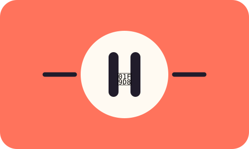

MODULE 03 · 06
🧘 Movimiento

SUBSECCIÓN
La pausa que cabe
Una pausa activa no necesita ser larga. Levantarte, caminar unos minutos o cambiar de postura puede convertirse en una señal práctica para interrumpir periodos prolongados frente a la pantalla.
Fuente / respaldo
Evidence reviewed on physical activity and mental health in university students (2025).
Evidence reviewed on physical activity and mental health in university students (2025).